공조냉동기계산업기사 (2010-05-09 기출문제)
1과목: 공기조화
1. 여과기를 여과작용에 의해 분류할 때 해당되는 것이 아닌 것은?
- 충돌 점착식
- 자동 재생식
- 건성 여과식
- 활성탄 흡착식
(정답률: 76%)

2. 다음 중 여름철 냉방에 가장 중요한 것은?
- 온도 변화
- 압력 변화
- 탄산가스량 변화
- 비체적 변화
(정답률: 92%)
3. 공조가 되고 있는 실내에서 배기되는 배기와, 환기를 위해 외부에서 도입되는 외기와의 사이에서 현열과 잠열을 동시에 교환시킬 수 있어 공조용 송풍량이 많은 건물에서 에너지 절약을 할 수 있는 전열교환기의 종류로 옳은 것은?
- 흡착식, 대류식
- 회전식, 고정식
- 흡수식, 압축식
- 복사식, 흡착식
(정답률: 68%)
4. 지역난방의 특징 설명으로 잘못된 것은?
- 연료비는 절감되나 열효율이 낮고 인건비가 증가된다.
- 개변건물의 보일러실 및 굴뚝이 불필요하므로 건물이용의 효용이 높다.
- 설비의 합리화로 대기오염이 적다.
- 대규모 열원기기를 이용하므로 에너비를 효율적으로 이용할 수 있다.
(정답률: 86%)
5. 모터로 고속회전반을 돌리고 그 힘으로 물을 빨아올려 회전반에 공급하면 얇은 수막이 형성되어 안개와 같이 비산된 후 공기를 가습하는 것은?
- 스크류식
- 회전식
- 원심식
- 분무식
(정답률: 68%)
6. 공기 조화를 하고자 하는 어떤 실의 냉방부하를 계산한 결과 현열부하 qs=3500kcal/h, 잠열부하 qL=500kcal/h였다. 이 때 취출공기의 온도를 17℃, 실내 기온을 26℃로 하면 취출풍량은 약 얼마인가? (단, 습공기의 정압 비열 Cpa=0.24kccal/kg℃ 이다.)
- 1341(kg/h)
- 1530(kg/h)
- 1620(kg/h)
- 1851(kg/h)
(정답률: 56%)
7. 온수배관의 시공시 주의할 사항으로 적합한 것은?
- 각 방열기에는 필요시만 공기배출기를 부착한다.
- 배관 최저부에는 배수밸브를 설치하며, 하향구배로 설치한다.
- 팽창관에는 안전을 위해 반드시 밸브를 설치한다.
- 배관 도중에 관지름을 바꿀 때에는 편심이음쇠를 사용하지 않는다.
(정답률: 78%)
8. 난방부하를 줄일 수 있는 요인이 아닌 것은?
- 극간풍에 의한 잠열
- 태양열에 의한 복사열
- 인체의 발생열
- 기계의 발생열
(정답률: 69%)
9. 노통 연관식 보일러의 장점이 아닌 것은?
- 비교적 고압의 대용량까지 제작이 가능하다.
- 효율이 높다.
- 동일용량의 수관식 보일러보다 가격이 싸다.
- 부하변동에 따른 압력변동이 크다.
(정답률: 61%)
10. 고속덕트와 저속덕트는 주덕트 내에서 최대 풍속 몇 m/s를 경계로 하여 구분되는가?
- 5 m/s
- 15 m/s
- 30 m/s
- 55 m/s
(정답률: 89%)
11. 다음 중 흡수식냉동기의 결점에 해당하지 않는 것은?
- 압축식 냉동기에 비해 설치면적, 높이, 중량이 크다.
- 냉각탑, 기타 부속설비가 압축식에 비해 큰 용량을 필요로 한다.
- 압축식에 비해 예냉시간이 약간 길다.
- 부하가 규정용량을 초과하면 사고 발생우려가 크다.
(정답률: 62%)
12. 공기조화 방식중 유인 유니트 방식에 대한 설명이다. 부적당한 것은?
- 다른 방식에 비해 덕트 스페이스가 적게 소요된다.
- 비교적 높은 운전비로서 개별실제어가 불가능하다.
- 각 유닛마다 수배관을 해야 하므로 누수의 염려가 있다.
- 송풍량이 적어서 외기 냉방효과가 낮다.
(정답률: 61%)
13. 습공기 선도상의 습구온도에 대한 설명으로 틀린 것은?
- 단열 포화온도와 같다.
- 습구에 닿는 풍속이 3~5m/s 이다.
- 아스만 습도계로 측정한 값이다.
- 모발 습도계로 측정한 값이다.
(정답률: 67%)
14. 다음과 같은 조건인 벽체의 열 관류율은 얼마인가? (단, 몰타르 1cm, 열전도율 1.2kcal/mh℃, 콘크리트 15cm, 열전도율 1.4kcal/mh℃, 양면 5cm, 열전도율 0.038kcal/mh℃, 하드텍스 0.6cm, 열전도율 0.12kcal/mh℃ 이다. 외측 및 내측의 열전달율은 각각 20kcal/m2h℃, 8kcal/m2h℃ 이다.)
- 0.475 kcal/m2h℃
- 0.0067 kcal/m2h℃
- 0.604 kcal/m2h℃
- 0.458 kcal/m2h℃
(정답률: 55%)
15. 수관 보일러의 특징으로 틀린 것은?
- 사용압력이 연관식보다 높다.
- 부하변동에 따른 추종성이 높다.
- 예열시간이 짧고 효율이 좋다.
- 초기투자비가 적게 들며 급수처리도 용이하다.
(정답률: 67%)
16. 팬코일 유니트에 대한 설명 중 맞는것은?
- 고속덕트로 보내져온 1차 공기를 노즐에 분출시켜 주위의 공기를 유인하여 팬코일로 송풍하는 공기조화기이다.
- 송풍기, 냉온수 코일 에어필터 등을 케이싱 내에 수납한 소형의 실내용 공기조화기이다.
- 송풍기, 냉동기, 냉온수코일 등을 기내에 조립한 공기 조화기이다.
- 송풍기, 냉동기, 냉온수코일, 에어필터 등을 케이싱 내에 수납한 소형의 실내용 공기조화기이다.
(정답률: 74%)
17. 일명 무덕트 방식으로 중형 축류팬으로부터 취출된 공기의 유인 효과를 이용하여 급기팬으로부터 공급된 외기를 주차장 전역으로 이송시켜 오염가스를 희석시킨 후 배기팬으로 배출하는 방식의 희석환기방식은?
- 제트팬방식
- 고속노즐방식
- 디리벤트 방식
- 무덕트 벤티레이터 방식
(정답률: 61%)
18. 보일러의 안전장치에 해당 되지 않는 것은?
- 안전밸브
- 저수위 경보기
- 화염 검출기
- 절탄기
(정답률: 79%)
19. 식당의 주방이나 화장실과 같은 장소에 적합한 환기방식으로 자연급기와 기계배기로 조합된 환기방식은?
- 제1종 환기방식
- 제2종 환기방식
- 제3종 환기방식
- 제4종 환기방식
(정답률: 71%)
20. 난방설비에 관한 설명으로 적당한 것은?
- 소규모 건물에서는 증기난방보다 온수난방이 흔히 사용된다.
- 증기난방은 실내 상하 온도차가 적어 유리하다.
- 복사난방은 급격한 외기 온도의 변화에 대한 방열량 조절이 우수하다.
- 온수난방은 온수의 증발 잠열을 이용한 것이다.
(정답률: 63%)
2과목: 냉동공학
21. 액분리기(Accumulator)이 설명이 잘못된 것은?
- 압축기에 액이 흡입되지 않게 한다.
- 응축기와 압축기 사이에 설치한다.
- 압축기의 파손을 방지한다.
- 장치 기동시 증발기 내이서의 냉매의 교란을 방지한다.
(정답률: 79%)
22. 증기 분사식 냉동기를 설명한 것 중 옳지 않은 것은?
- 회전부가 없어 조용하고, 기밀이 잘 유지된다.
- 물을 냉매로 이용한 것이다.
- 증발기에서 증발된 냉매는 디퓨저를 통해 감압되어 복수기로 유입된다.
- 한 개의 이젝터에 여러 개의 노즐을 설치한다.
(정답률: 75%)
23. 제빙장치 중 용빙조의 역할로 맞는 것은?
- 제빙조에 빙관을 넣고 꺼내는 장치
- 결빙된 얼음을 방관에서 떼어내기 쉽도록 하는 장치
- 결빙된 얼음을 빙관에서 꺼내는 장치
- 꺼낸 얼음을 부수는 장치
(정답률: 78%)
24. 암모니아 냉동기에서 암모니아가 누설되는 곳에 리트머스 시험지를 대면 어떤 색으로 변하는가?
- 홍색
- 청색
- 갈색
- 백색
(정답률: 86%)
25. 냉동장치의 압축기와 관계가 없는 효율은?
- 소음효율
- 압축효율
- 기계효율
- 체적효율
(정답률: 88%)
26. 냉동장치의 온도를 일정하게 유지하기 위하여 사용되는 온도제어기(thermodtat)의 방식으로 적당하지 않은 것은?
- 바이메탈식
- 건습구식
- 증기 압력식
- 전기 저항식
(정답률: 62%)
27. 냉동능력 9960kcal/h 인 냉동기에서 냉매를 압축할 때 3.2kW의 동력이 소모되었다. 응축기 방열량은 몇 kcal/h인가?
- 11982
- 12012
- 12712
- 13160
(정답률: 65%)
28. 고속다기동 압축기의 특성 중 틀린 것은?
- 윤활유의 소비가 많다.
- 능력에 비해 소형이며 가볍다.
- 기통수가 많아 용량제어가 곤란하다.
- 무부하 기동이 가능하다.
(정답률: 75%)
29. 증발기의 제상법으로 제상시간이 짧고 용이하게 설비할 수 있어 소형의 전기냉장고, 쇼 케이스 등에 많이 사용하는 방식은?
- 고압가스 제상
- 압축기 정지 제상
- 온수 브라인 제상
- 살수식 제상
(정답률: 64%)
30. 드라이아이스의 승화 잠열로 맞는 것은?
- 137 kcal/kg
- 137 cal/kg
- 237 kcal/kg
- 237 cal/kg
(정답률: 63%)
31. 감열(Sensible heat)에 대해 설명한 것으로 맞는 것은?
- 물질이 상태 변화없이 온도가 변화할 때 필요한 열
- 물질이 상태, 압력, 온도 모두 변화할 때 필요한 열
- 물질이 압력은 변화하고 상태가 변하지 않을 때 필요한 열
- 물질이 온도만 변하고 압력이 변화하지 않을 때 필요한 열
(정답률: 83%)
32. P-V선도에서 1에서 2까지 단열 압축하였을 때의 압축일량은 다음 중 어느 것으로 표현되는가?
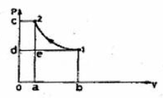
- 면적 1 2 c d 1
- 면적 1 d 0 b 1
- 면적 1 2 a b 1
- 면적 a e d 0 a
(정답률: 87%)
33. 흡수식 냉동기의 주요부품이 아닌 것은?
- 흡수기
- 압축기
- 발생기
- 증발기
(정답률: 74%)
34. 압축기의 압축방식에 의한 분류중 용적형 압축기가 아닌 것은?
- 왕복동식 압축기
- 스크루식 압축기
- 회전식 압축기
- 원심식 압축기
(정답률: 69%)
35. 냉동 싸이클에서 응축온도가 32℃, 증발온도가 -10℃이면 성적계수는 약 얼마인가?
- 9.73
- 8.45
- 7.26
- 6.26
(정답률: 55%)
36. 응축압력이 현저하게 상승한 원인으로 옳은 것은?
- 냉각면적이 용량에 비해 크다.
- 응축부하가 크게 감소하였다.
- 수냉식일 경우 냉각수량이 증가하였다.
- .유분리기의 기능이 불량하고 응축기에 물때가 많이 부착되어 있다.
(정답률: 78%)
37. 정압식 팽창밸브에 대한 설명 중 옳은 것은?
- 증발 압력을 일정하게 유지하기 위해 사용한다.
- 부하 변동에 따른 유량제어를 용이하게 할 수 있다.
- 주로 대용량에 사용되며 증발부차가 큰 곳에 사용한다.
- 증발기내 압력이 높아지면 밸브가 열리고 낮아지면 닫힌다
(정답률: 70%)
38. 열에너지의 흐름에 대한 방향성을 말해주는 법칙은?
- 제0법칙
- 제1법칙
- 제2법칙
- 제3법칙
(정답률: 72%)
39. 어떤 냉동장치의 게이지압이 저압은 60mmHgv, 고압은 6kgf/cm2였다면 이때의 압축비는 약 얼마인가?
- 5.8
- 6.0
- 7.4
- 8.3
(정답률: 54%)
40. 압축기의 클리어런스가 클 경우에 대한 설명으로 틀린 것은?
- 냉동능력이 감소한다.
- 체적효율이 저하한다.
- 압축기가 과열한다.
- 토출가스 온도가 저하한다.
(정답률: 84%)
3과목: 배관일반
41. 급수배관 시공시 공공수도 직결배관에 대해서는 몇 kgf/cm2의 수압시험을 하는가?
- 17.5
- 15.5
- 13.5
- 11.5
(정답률: 50%)
42. 간접가열식 급탕설비에서 증기가열장치의 주위 배관에 증기트랩을 설치하는 이유는?
- 배관내의 소음을 줄이기 위하여
- 열팽창에 따른 신축을 흡수하기 위하여
- 응축수만을 보일러로 환수시키기 위하여
- 보일러나 저탕탱크로 배수가 역류되는 것을 방지하기 위하여
(정답률: 59%)
43. 배수관에서 발생한 해로운 하수가스의 실내 침입을 방지 하기 위해 배수트랩을 설치한다. 배수트랩의 종류가 아닌 것은?
- 드럼 트랩
- 디스크 트랩
- 하우스 트랩
- 벨 트랩
(정답률: 69%)
44. 컴퓨터실의 공조방식 중 바닥아래 송풍방식(프리액세스 취충방식)의 특징이 아닌 것은?
- 컴퓨터에 일정 온도의 공기 공급이 용이하다.
- 급기의 청정도가 천장 취출 방식보다 높다.
- 바닥온도가 낮게 되고 불쾌감을 느기는 경우가 있다.
- 온ㆍ습도조건이 극소적으로 불만족한 경우가 있다.
(정답률: 63%)
45. 하나의 장치에서 4방밸브를 조작하여 냉ㆍ난방 어느 쪽도 사용할 수 있는 공기조화용 펌프는?
- 냉각 펌프
- 열 펌프
- 원심 펌프
- 왕복 펌프
(정답률: 80%)
46. 동기설비의 통기 방식에 해당하지 않는 것은?
- 루프 통기 방식
- 각개 통기 방식
- 신정 통기 방식
- 결합 통기 방식
(정답률: 70%)
47. 냉매 배관 시 주의사항으로 옳지 않은 것은?
- 배관의 굽힘 반지름은 작게 한다.
- 불응축 가스의 침입이 없어야 한다.
- 냉매에 의한 관의 부식이 없어야 한다.
- 냉매 압력에 충분히 견디는 강도를 가져야 한다.
(정답률: 88%)
48. 다음 중 열전도율이 가장 큰 관은?
- 강관
- 알루미늄관
- 동관
- 연관
(정답률: 79%)
49. 열팽창에 의한 배관의 신축이 방열기에 영향을 주지 않도록 방열기 주변에 설치하는 신축이음쇠는?
- 신축곡관
- 스위블 조인트
- 슬리브형 신축이음
- 벨로즈형 신축이음
(정답률: 74%)
50. 냉매 배관 설계시 잘못된 것은?
- 2중 입상관(Riser)사용시 트랩을 크게 한다.
- 과도한 압력강하를 방지한다.
- 압축기로 액체 냉매의 유입을 방지한다.
- 압축기를 떠난 윤활유가 일정비율로 다시 압축기로 되돌아 오게 한다.
(정답률: 78%)
51. 도시가스 배관에 관한 설명이다. 틀린 것은?
- 상수도관, 하수도관 등이 매설된 도로에서는 이들의 최하부에 매설한다.
- 배관외부에 사용가스명칭, 최고사용압력, 흐름방향 등을 표시하고 지상배관은 황색으로 표시한다.
- 배관접합은 나사를 원칙으로 하며 나사가 곤란한 경우는 기계적 접합 또는 용접 접합을 한다.
- 건물내의 배관은 외부에 노출시켜 시공하며 동관이나 스테인리스관등 이음매 없는 관은 매몰하여 설치 할 수 있다.
(정답률: 64%)
52. 스케줄 번로(Sch. NO)에 의해 관의 살 두께를 나타내는 강관이 아닌 것은?
- 배관용 탄소강관(SPP)
- 압력배관용 탄소강관(SPPS)
- 고압배관용 탄소강관(SPPH)
- 고온배관용 탄소강관(SPHT)
(정답률: 64%)
53. 급탕배관에서 슬리브(sleeve)를 사용하는 목적은?
- 보온효과 증대
- 배관의 신축 및 보수
- 배관 부식방지
- 배관의 고정
(정답률: 85%)
54. 다음에서 보온 피복을 하지 않는 관은?
- 증기관
- 급수관
- 난방관
- 통기관
(정답률: 79%)
55. 동관작업과 관계가 없는 공구는?
- 사이징 둘
- 익스팬더
- 플레어링 둘 셋
- 오스타
(정답률: 73%)
56. 공조기 분출구 중 가장 큰 유인성능을 가지고 있으며 원형 및 각형 모양으로 주로 천장에 부착하는 분출구는?
- 평커루버형
- 아네모스탯형
- 베인격자형
- 다공판형
(정답률: 72%)
57. 급수배관에 워터해머 발생을 방지하거나 경감하는 방법으로 거리가 먼 것은?
- 배관은 가능한 한 직선으로 한다.
- 공기빼기 밸브를 설치한다.
- 급격히 개폐되는 밸브의 사용을 제한한다.
- 관내 유속을 1.5~2m/s 이하로 제한한다.
(정답률: 53%)
58. 저압 가스배관의 유량을 산출하는 식으로 맞는 것은? [단, Q:유량(m3/h), D:관지름(cm), △P:압력손실(mmAq), S:비중, K:유량계수, L:관의 길이(m)]
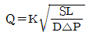
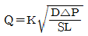
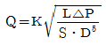
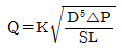
(정답률: 64%)
59. 일반 수용가용 가스미터이며 값이 싸고 저압용에 사용되는 것은?
- 습식 가스미터
- 레이놀드식 가스미터
- 다이어프램식 가스미터
- 루트식 가스미터
(정답률: 63%)
60. 냉각탑을 사용하는 경우의 일반적인 냉각수 온도 조절 방법이 아닌 것은?
- 전동 2 way valve를 사용하는 방법
- 전동 혼합 3 way valve를 사용하는 방법
- 전동 분류 4 way valve를 사용하는 방법
- 냉각탑 송풍기를 on-off제어 하는 방법
(정답률: 71%)
4과목: 전기제어공학
61. 다음 중 제어계의 기본 구성요소가 아닌 것은?
- 제어목적
- 제어대상
- 제어요소
- 추치제어
(정답률: 76%)
62. 그림과 같은 단위 피드백 제어계의 입력을 R(s), 츨력을 C(s)라 할 때 전달함수는 어떻게 표현되는가?
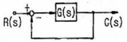
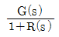
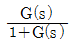
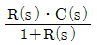
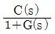
(정답률: 74%)
63. 시퀀스 제어에 관한 설명 중 옳지 않은 것은?
- 조합 논리회로로도 사용된다.
- 전력계통에 연결된 스위치가 일시에 동작한다.
- 시간 지연요소로도 사용된다.
- 제어 결과에 따라 조작이 자동적으로 이행된다.
(정답률: 72%)
64. 저항을 측정할 때 전원공급장치, 검출계 및 4개의 저항으로 구성하여 이 4개의 저항 중 하나는 미지저항이고 이 마지저항은 다른 3개의 저항의 관계로 구한다. 이것을 무엇이라 하는가?
- DC전위차계
- 휘트스튼 브리지
- 메거
- 영상변류기
(정답률: 67%)
65. 배리스터의 주된 용도는?
- 서지전압에 대한 회로 보호용
- 온도
- 측정용출력전류 조절용
- 전압 증폭용
(정답률: 79%)
66. 단상 변압기 2대를 V결선으로 3상 결선하는 경우 변압기의 이용률[%]은 얼마인가?
- 57.7
- 70.7
- 86.6
- 96
(정답률: 64%)
67. 단상 변압기 3대를 사용하는 것과 3상 변압기 1대를 사용하는 것을 비교할 때 단상 변압기를 사용할 때의 장점에 해당되는 것은?
- 철심재료 및 부싱, 유량 등이 적게 들어 경제적이다.
- 단위방식이 늘어 결선이 용이하다.
- 부하시 탭 변환장치를 채용하는데 유리하다.
- 부하의 증가에 대처하기가 용이하다.
(정답률: 60%)
68. 다음 중 온도보상용으로 사용되는 것은?
- 다이오드
- 다이액
- 서미스터
- SCR
(정답률: 81%)
69. 그림과 같은 회로망에서 전류를 계산하는데 맞는 식은?
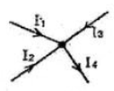
- I1+I2+I3+I4=0
- I1+I2+I3-I4=0
- I1+I2=I3+I4
- I1+Is=I2+I4
(정답률: 82%)
70. 3상 권성형 유도전동기의 2차 회로에 저항기를 접속시키는 이유가 될 수 없는 것은?
- 속도를 제어하기 위해서
- 기동전류를 제한시키기 위해서
- 기동토크를 크게 하기 위해서
- 최대토크를 크게 하기 위해서
(정답률: 60%)
71. 전기력선의 밀도와 같은 것은?
- 정전력
- 유전속밀도
- 전계의 세기
- 전하밀도
(정답률: 62%)
72. 제어요소는 무엇으로 구성되는가?
- 입력부와 조절부
- 출력부와 검출부
- 피드백 동작부
- 조작부와 조절부
(정답률: 80%)
73. 변압기의 병렬운전에서 필요하지 않는 조건은?
- 극성이 같을 것
- 1차, 2차 정격전압이 같을 것
- 출력이 같을 것
- 권수비가 같을 것
(정답률: 62%)
74. 위상차가 30°이고 단상 220V 교류전압을 인가했더니 15A의 전류가 흘렀다. 소비전력은 약 몇 [kW] 인가?
- 3.2
- 2.9
- 29.1
- 13.2
(정답률: 40%)
75. 다음 블록선도의 특성방정식은?
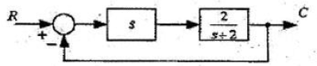
- 3s+2
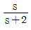
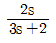
- 2s
(정답률: 65%)
76. 서보기구는 물체의 위치, 방향, 자세 등을 제어량으로 하는 분야에 널리 사용되며, 목표치의 양의 변화에 추종하도록 구성되어 있다. 이 제어시스템의 특징을 잘 설명하고 있는 것은?
- 제어량이 전기적 변위이다.
- 목표치가 광범위하게 변화할 수 있다.
- 개루프 제어이다.
- 현장에서 제어되는 일이 많다.
(정답률: 64%)
77. 안정될 필요조건을 갖춘 특성방정식은?
- s4+2s2+5s+5=0
- s3+s2-3s+10=0
- s2+3s2+3s-3=0
- s3+6s2+10s+9=0
(정답률: 76%)
78. 그림의 회로에서 전압 100V를 가할 때 10Ω의 저항에 흐르는 전류는 몇 A인가? (단, 회로의 저항단위는 모두 Ω이다.)
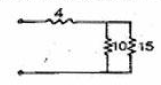
- 4
- 6
- 9
- 10
(정답률: 52%)
79. 제어량이 온도, 압력, 유량 및 액면 등일 경우 제어하는 방식은?
- 프로그램제어
- 시퀀스제어
- 추종제어
- 프로세스제어
(정답률: 65%)
80. 다음 중 그림과 같은 시퀀스 제어회로가 나타내는 것은? (단, A와B는 푸시버튼스위치, R은 전자계전기, L은 램프이다.)
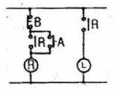
- 자기유지
- AND논리
- 지연논리
- NAND논리
(정답률: 74%)